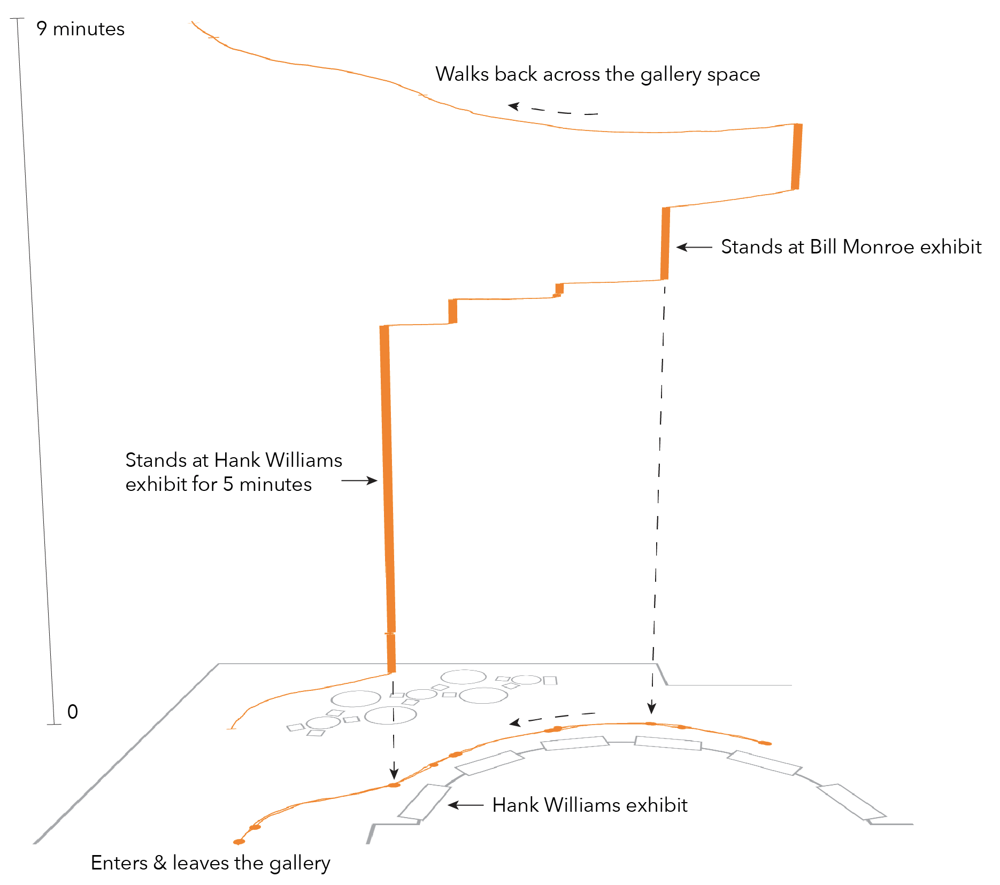

Figure 2. Annotated screenshot from the IGS showing the movement of Adhir in a space-time cube. Adhir’s movement is shown as an orange path over a floor plan of the gallery space and as it extends upwards over space and time. In this space-time view, the z-axis encodes time, and the x/y axes correspond to the floor plan.
